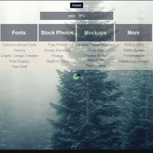

Schedule
Reference
Accounting
Home
Notes
About
Collection of projects completed for others and projects involving testing out concepts not yet implemented.
001 — Optimization testing
002 — Liz personal
003 — Lydia personal
004 — Background image testing

005 — Adam personal
006 — Node.js testing